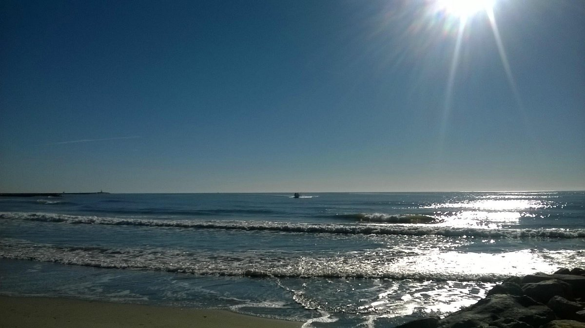

Découvrez les lieux


.jpg)
Appartement lumineux 50m² aux Saintes-Maries-de-la-Mer
Proche plage, parking privé et Wi-Fi
Réserver maintenant
Idéal pour 2 à 4 personnes, situé à deux pas de la plage et du centre-ville. Profitez d'un séjour clé en main avec draps et ménage inclus, dans un logement tout équipé pour des vacances en famille ou en couple en Camargue.
Notre appartement tout équipé de 50 m² comprend :
Pour des vacances été 2026 à Saintes-Maries-de-la-Mer, réservez dès maintenant et profitez d'un appartement cosy proche plage et centre-ville. Que vous soyez en couple, en famille ou entre amis, notre logement vous garantit confort et tranquillité en Camargue.
Profitez d'un séjour confortable aux Saintes-Maries-de-la-Mer, à seulement 6 minutes à pied de la plage des Amphores. Idéal pour un week-end en couple, des vacances en famille ou entre amis, cet appartement lumineux accueille jusqu'à 4 personnes.
110€/nuit
Tarifs dégressifs pour les séjours longue durée
Téléphone : 06 48 02 19 72
Email : ellattanzio66@gmail.com